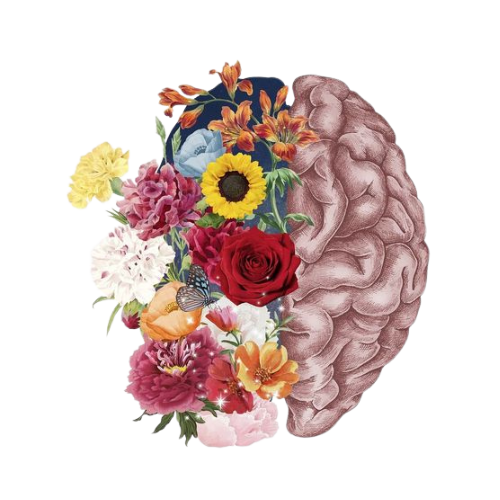
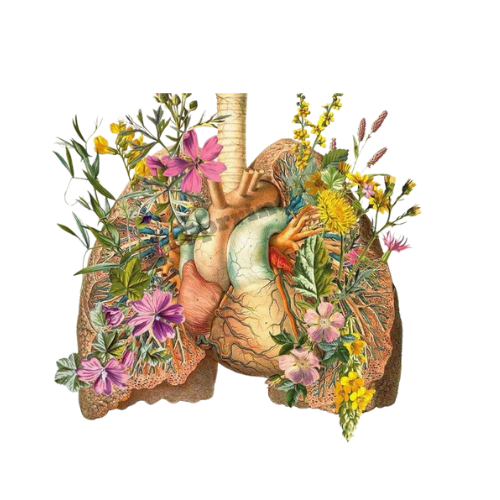
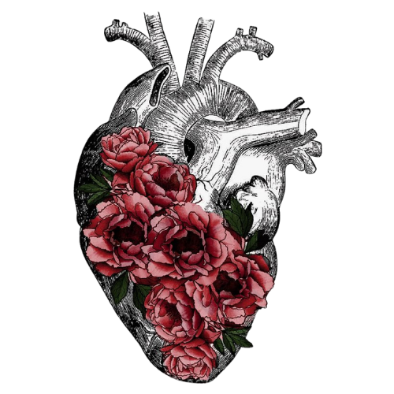
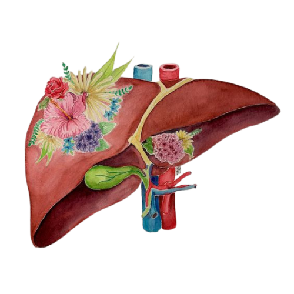
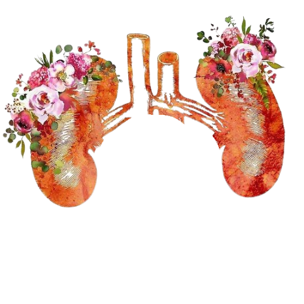

BioVida
Thiago Fazollo - 1ºB

Iniciar
Iniciar
O corpo humano é formado por vários órgãos e sistemas, que trabalham de maneira conjunta para garantir o funcionamento perfeito do organismo.
Se observamos a nível microscópico, podemos perceber a presença de milhares e milhares de células, que formam os tecidos, os órgãos e os sistemas, característica essa que nos permite afirmar que os seres humanos são organismos pluricelulares.
O corpo humano é constituído por diferentes partes, entre elas, a pele, os músculos, os nervos, os órgãos, os ossos, etc.
Cada parte do corpo humano é formada por inúmeras células que apresentam formas e funções definidas. Além disso, existem os tecidos, órgãos e sistemas, os quais funcionam de modo integrado.
Podemos comparar nosso corpo a uma máquina complexa e perfeita com todas as suas partes funcionando em sincronia.
>>>
    

>>>
O esqueleto humano é uma estrutura formada por vários ossos e cartilagens, que permitem, entre várias outras funções, a movimentação do nosso corpo.
O esqueleto humano é um tipo de endoesqueleto, uma vez que se encontra no interior do nosso corpo, sendo formado por mais de 200 ossos.
O esqueleto humano apresenta uma série de funções no organismo, que vão muito além da sustentação do corpo. Entre as principais funções desempenhadas pelo esqueleto, podemos citar:
Suporte do organismo;
Proteção dos órgãos internos e dos tecidos moles;
Em conjunto com os músculos, garante a nossa movimentação;
Apoio aos músculos esqueléticos;
Depósito de sais minerais, principalmente fósforo e cálcio;
Relação com a produção das células do sangue, uma vez que a medula óssea é encontrada nos ossos.
O esqueleto humano é dividido em duas partes: esqueleto axial e esqueleto apendicular.

>>>
O crânio apresenta ossos que, em sua maioria, estão juntos em virtude das articulações imóveis. Esses ossos estão relacionados com funções importantes do organismo, como a proteção do encéfalo e o processo de fala e mastigação. Essa última função é possibilitada pela presença da mandíbula.
Os ossos que formam o crânio podem ser divididos em dois grupos: ossos faciais e cranianos.
As vértebras são os ossos que formam a coluna vertebral. Entre uma vértebra e outra, encontramos os discos intervertebrais, os quais atuam como um verdadeiro colchão entre cada um desses ossos.
A coluna vertebral desempenha papéis fundamentais para a sobrevivência do indivíduo. Ela garante, por exemplo, suporte para o corpo e proteção para a medula espinhal, uma porção do sistema nervoso central.
Na coluna vertebral, observamos sete vértebras cervicais, doze torácicas, cinco lombares, sacro e cóccix. O sacro é formado pela fusão de cinco vértebras, enquanto o cóccix é formado pela fusão de quatro vértebras.
>>>

O corpo humano é verdadeiramente incrível. Cada órgão, tecido e célula desempenha um papel vital na manutenção da vida.
Os músculos, que compõem aproximadamente 40% do peso corporal, não apenas fornecem força e movimento, mas também desempenham um papel crucial na regulação da temperatura do corpo. O cérebro, com sua rede intrincada de bilhões de neurônios, é o centro de controle, coordenando cada ação e reação de forma incrivelmente rápida e eficiente.
Além disso, o sistema imunológico, uma verdadeira fortaleza invisível, defende o corpo contra invasores indesejados, protegendo-nos contra doenças. Os sentidos - visão, audição, olfato, paladar e tato - proporcionam uma experiência rica e sensorial do mundo ao nosso redor.
A capacidade de regeneração do corpo também é notável. A pele, por exemplo, se renova constantemente, proporcionando uma barreira protetora contra o ambiente. Os ossos têm a capacidade de se reparar, e o sangue é continuamente renovado para garantir a saúde e a vitalidade.
É verdadeiramente extraordinário como cada sistema e órgão do corpo humano trabalham em conjunto de maneira tão intricada e coordenada. A complexidade e a harmonia do corpo humano destacam sua natureza única e notável.
Voltar para o início
O cérebro é uma porção do sistema nervoso central que está contida no interior da caixa craniana. Faz parte do encéfalo, sendo responsável por representar cerca de 80% da massa dessa porção do SNC. É considerado o centro da inteligência e aprendizagem do nosso organismo e se desenvolve a partir do telencéfalo.
O órgão pode ser dividido em duas partes, o hemisfério cerebral esquerdo e o direito, que estão conectados pelo corpo caloso. Podemos dividir os hemisférios cerebrais em quatro lobos, que recebem o nome de acordo com o osso do crânio situado acima dele. Assim, temos o lobo frontal, lobo temporal, lobo parietal e lobo occipital.
O cérebro é a parte do encéfalo relacionada com funções como a memória, inteligência, raciocínio, linguagem, comportamento e razão. Além disso, é também o cérebro o responsável pelo controle da contração dos músculos esqueléticos e integração de informações sensoriais.
O cérebro pode ser dividido em duas partes, hemisfério cerebral esquerdo e hemisfério cerebral direito, que estão conectados pelo corpo caloso, uma estrutura formada por um espesso feixe de fibras nervosas.
É importante destacar que os hemisférios comandam lados opostos do corpo. Isso quer dizer que o lado esquerdo do cérebro, por exemplo, controla movimentos do lado direito do corpo e vice-versa.
Apesar do que muitos afirmam, os humanos não utilizam apenas 10% do seu cérebro. Uma grande porção dessa parte do nosso sistema nervoso trabalha para garantir o funcionamento adequado do corpo, mas é impossível atribuir uma porcentagem ao seu funcionamento.
O cérebro não apresenta terminações nervosas que captam dor, mas recebe os sinais de dor captados no organismo.
Algumas cirurgias de retirada de tumor cerebral precisam ser realizadas com o paciente acordado. Há casos em que o paciente fica até mesmo tocando instrumentos musicais.
Voltar
Os pulmões são órgãos que fazem parte do sistema respiratório e exercem um importante papel no processo de trocas gasosas. Cada pessoa apresenta dois pulmões, que estão localizados na caixa torácica à direita e à esquerda do mediastino (espaço existente entre os dois pulmões). Essas estruturas apresentam formato cônico, com uma base inferior, um ápice superior e duas faces, a costal (voltada para as costelas) e a medial (voltada para o mediastino).
Os pulmões são duas estruturas esponjosas que apresentam esse aspecto em virtude da presença de pequenas bolsas que se assemelham a favos de uma colmeia: são os chamados alvéolos pulmonares.
Ao redor das estruturas esponjosas, observa-se a presença de uma membrana chamada de pleura. Essa membrana reveste internamente a cavidade torácica e externamente os pulmões, recebendo o nome de pleura parietal e pleura visceral, respectivamente.

O pulmão direito é maior que o esquerdo, sendo dividido em lobo superior, lobo médio e lobo inferior em virtude da presença de duas fissuras. O pulmão esquerdo, por sua vez, é formado por dois lobos, um superior e outro inferior, em virtude da presença de apenas uma fissura. Em cada um dos pulmões, observa-se a presença do hilo, local onde penetram os brônquios, as artérias pulmonares e saem as veias pulmonares.
Os pulmões, por serem ricos em alvéolos, são essenciais para a ocorrência da hematose, um processo de trocas gasosas. A hematose ocorre quando o oxigênio proveniente da respiração passa para o sangue presente nos capilares sanguíneos que envolvem os alvéolos, e o gás carbônico presente no sangue difunde-se, então, para o interior dos alvéolos. Essa troca gasosa garante que todas as células recebam o oxigênio necessário para a realização da respiração celular, além de eliminar o que foi produzido nas atividades celulares e não é mais necessário.
Voltar
O coração humano, assim como o de todos os mamíferos, é um órgão musculoso formado por quatro cavidades e que apresenta como função primordial garantir que o sangue seja enviado para todas as partes do nosso corpo. Esse órgão, que apresenta o tamanho médio de um punho fechado, está localizado atrás do esterno e entre os pulmões, no mediastino médio. Ele garante o bombeamento graças a contrações rítmicas do músculo cardíaco.
O coração é uma câmara oca com quatro cavidades: dois átrios e dois ventrículos. Possui o formato de um cone invertido com o ápice voltado para baixo e apresenta o volume aproximado de uma mão fechada. Normalmente pesa cerca de 300 g.
O coração bate de maneira rítmica, alternando entre contração e relaxamento. A contração é chamada de sístole, e o relaxamento é denominado de diástole.
A sístole garante que o sangue seja bombeado, e a diástole, que é a fase de relaxamento, garante que as cavidades do coração encham-se de sangue.
A geração do batimento cardíaco é atribuída ao chamado nó sinoatrial, que é formado por uma massa de células especializadas, localizadas na parede do átrio direito, responsáveis por gerar espontaneamente um impulso elétrico. Esses impulsos elétricos são semelhantes aos gerados pelas células nervosas e propagam-se rapidamente pelo tecido muscular cardíaco.
O ritmo cardíaco médio normal é de, aproximadamente, 70 batimentos por minuto. Quando esse ritmo está muito aumentado, há taquicardia e, quando está muito baixo, braquicardia.
Voltar
O fígado é um anexo do sistema digestório e é considerado um dos maiores órgãos do corpo humano. Esse órgão está localizado na região superior da cavidade abdominal, abaixo do diafragma e do lado direito, apresenta coloração marrom avermelhada e pesa, em média, 1,5 kg.
O fígado está relacionado com funções importantes do nosso corpo, tais como a regulação do metabolismo de vários nutrientes (proteínas, carboidratos e lipídios), síntese de proteínas e outras moléculas, degradação de hormônios, armazenamento de substâncias, como o glicogênio, e excreção de substâncias tóxicas.
Além disso, está relacionado com a produção de hemácias no embrião, destrói essas células quando estão velhas, além de sintetizar alguns fatores de coagulação.
Apesar das diversas funções do fígado, uma das principais e mais conhecidas é a formação e secreção da bile — uma substância formada principalmente por ácidos biliares, fosfolipídios, colesterol, sais inorgânicos e bilirrubina. Esta, por sua vez, é responsável por dar cor à bile e é resultado da destruição de hemácias.
Por dia, o fígado produz cerca de 500 a 1000 ml de bile, que são armazenados na vesícula biliar. A produção dessa substância ocorre constantemente, entretanto, logo após as refeições, a secreção é aumentada.
A bile apresenta basicamente duas funções primordiais: excreção de algumas substâncias e a emulsão das gorduras, que ajuda na digestão e absorção dos lipídios. Na bile são eliminadas, principalmente, toxinas, substâncias presentes em drogas e a bilirrubina. Esse processo é conhecido como detoxificação hepática.
Voltar
Os rins são dois órgãos que pertencem ao sistema urinário.
Os rins localizam-se em ambos os lados da coluna vertebral, junto à parede posterior do abdômen, abaixo do diafragma.
O rim direito é um pouco mais baixo, devido à presença do fígado. Acima dos rins localizam-se as glândulas suprarenais.
Os rins apresentam formato de feijão e coloração marrom-avermelhada. Possuem cerca de 12 centímetros e pesam até 170 gramas cada.
Cada rim é revestido por três camadas de tecido: a fáscia renal, a cápsula adiposa e a cápsula fibrosa.
A anatomia interna dos rins é dividida em duas zonas, o córtex e a medula renal.
O córtex renal corresponde à camada mais externa, logo após a cápsula fibrosa do rim. O córtex apresenta coloração avermelhada e textura lisa.
No córtex renal são encontrados os néfrons. O néfron é a unidade funcional básica do rim, responsável pela formação da urina. Cada rim possui milhares de néfrons.
A medula renal apresenta coloração marrom-avermelhada. Basicamente, a medula consiste em 8 a 18 estruturas cuneiformes, as pirâmides renais.
As pirâmides renais são agrupamentos de ductos que coletam a urina formada nos néfrons. A base das pirâmides é voltada para o córtex e o ápice para a medula. No vértice de cada pirâmide localiza-se a papila renal.
Cada papila é envolvida pelo cálice menor que se reúnem e formam os cálices maiores. Do cálice renal maior, a urina é drenada para a pelve renal, onde é lançada toda a urina produzida no rim. Da pelve renal, a urina atinge o ureter até chegar à bexiga urinária.
Quanto à anatomia externa, observa-se uma região superior, onde encontra-se a glândula supra renal, e inferior. Na região mediana encontra-se o hilo, uma fenda vertical. Do hilo partem a artéria renal, a veia renal e o ureter.

Voltar